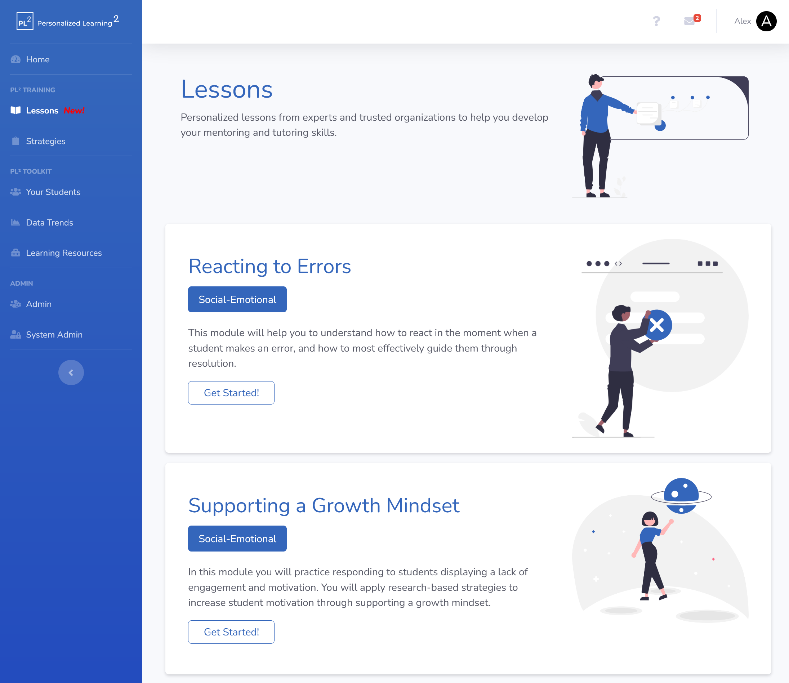
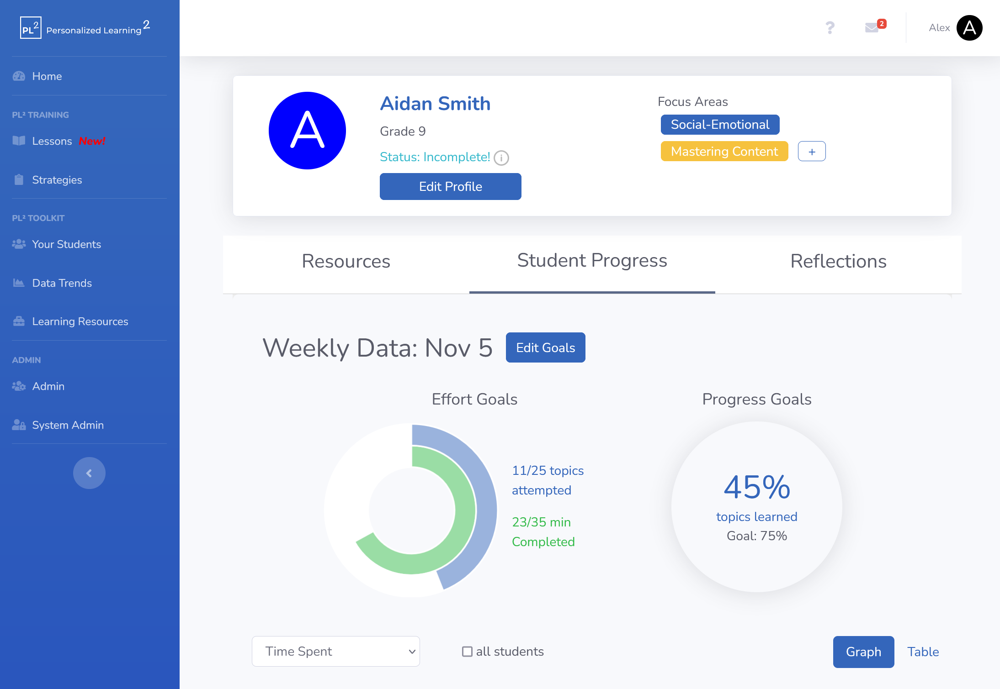

Spring has sprung, and with the change of seasons comes another big change in the Personalized Learning Squared ecosystem. You will see an all new side of the same PL² you know and love, including the introduction of the lessons feature and the reorganization of different PL2 services into their own individual solutions.
All training and professional development features will be classified under the PL2 Training solution. We have released the highly anticipated 'Lessons' feature, which will provide tutors and teachers with short (~15 mins), interactive e-learning experiences that they can do at their own pace. Mentor-facing resources can now be found under the 'Strategies' section of the app.
The PL2 data-driven student dashboard and personalized resource assistant will now be called the PL2 Toolkit solution line.
All strategies and resources in the app have been re-organized according to our new research-driven SMART competencies system.
These changes are now visible in the app and will provide an all new experience for tutors to be able to easily access the features they need.
Read on below for more details on the individual updates!
The navbar has been reorganized to distinguish between our two main in-app solutions for tutors:
PL² Training contains resources that help mentors develop their mentoring skills so that they can help students most effectively.For more information, please see our research!
A new addition to PL² Training - modules to help tutors with the most challenging and important skills, designed to be completed in under 15 minutes. We currently have two modules (Reacting to Errors and Supporting a Growth Mindset), with new modules being released every month.

